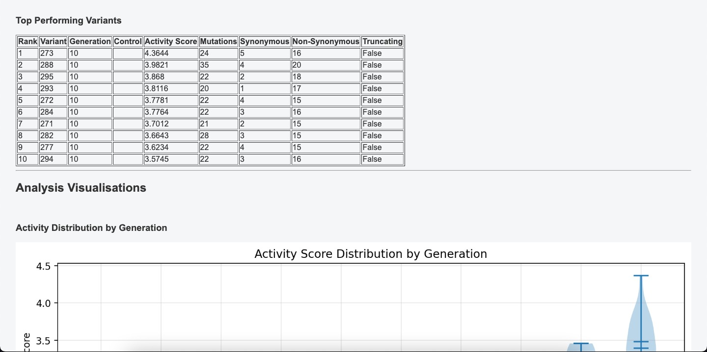
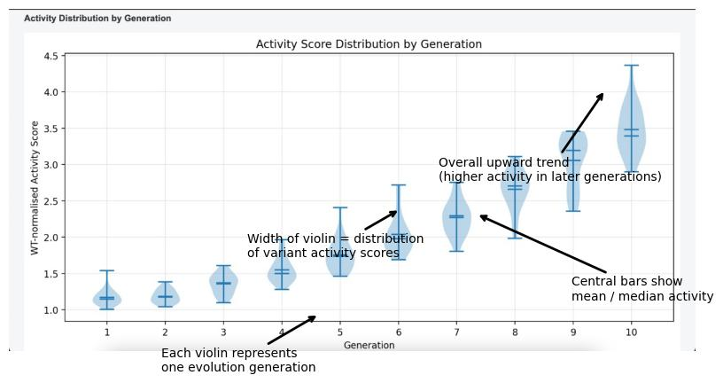
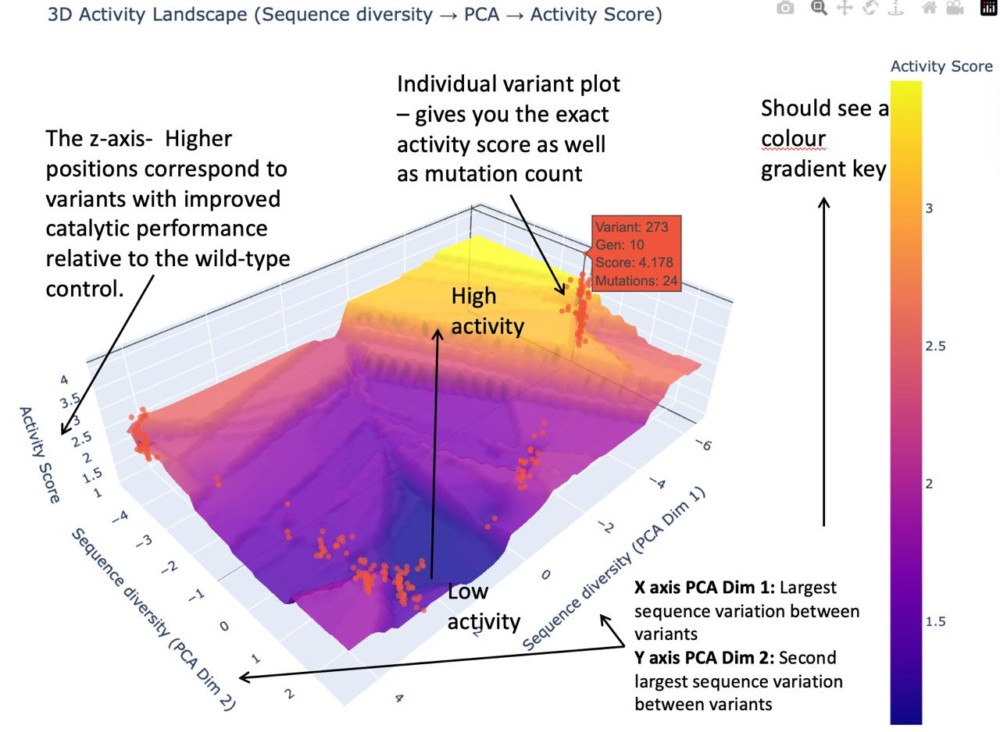

Results
Visualisations
Once the analysis is done, the status and message within the Experimental Details table should show:
| Status | Message | What it means |
|---|---|---|
| Analysis Complete | Analysis completed successfully | All variants have been annotated and scored — results are now available to view |
To complement the numerical ranking, the portal generates several visualisations that provide different perspectives on the experimental results. These visualisations help researchers interpret both individual variant performance and population-level evolutionary trends.
The analysis report includes three primary outputs: - Top 10 Variant Table - Activity Distribution per Generation Plot - 3D PCA-Based Activity Landscape
Top 10 Variant Table
After the analysis is complete, the results page displays a Top 10 Variant Table showing the highest-performing variants identified in the experiment. The table ranks variants according to their Activity Score, with the best-performing variant appearing at the top. Each row represents one variant from the experiment.
Example table:

| Description | |
|---|---|
| Rank | Position of the variant based on Activity Score |
| Variant Identifier (Plasmid Variant Index) | Unique identifier for the variant in the dataset |
| Parent Variant | The variant from the previous generation that this variant was derived from |
| Directed Evolution Generation | The generation in which the variant was produced |
| DNA Quantification | Measured DNA yield for that variant |
| Protein Quantification | Measured protein abundance for that variant |
| Activity Score | Normalised metric representing catalytic performance relative to the wild-type control |
| Mutation Counts | Number of mutations compared to the wild-type sequence, broken down by synonymous, non-synonymous, and truncating mutations |
By reviewing this table, users can quickly identify variants that show improved catalytic activity compared to the wild-type control. These variants are often strong candidates for further experimental validation or for use as parent sequences in subsequent rounds of directed evolution.
Activity Distribution per Generation Plot
The Activity Distribution plot shows how Activity Scores are distributed across different generations of the directed evolution experiment. This visualisation helps users understand how variant performance changes throughout the directed evolution experiment. Each generation is represented by a violin-shaped distribution summarising the Activity Scores of all variants belonging to that generation.
Example plot:

Each violin displays the following features:
| Feature | Description |
|---|---|
| Distribution shape | The width of the violin indicates how many variants fall within a particular Activity Score range |
| Mean activity value | The average Activity Score for variants in that generation |
| Median activity value | The central value representing the midpoint of the distribution |
| Spread of activity values | The variation in performance between variants within that generation |
By examining this plot, users can observe whether variant activity improves, stabilises, or declines across successive generations. For example, if the overall distribution shifts toward higher Activity Scores in later generations, this suggests that the directed evolution process is successfully enriching for improved variants.
The diagram below shows an example output generated from a sample dataset, illustrating the key patterns users should look for when analysing their own experimental results.
3D PCA-Based Activity Landscape
The 3D Activity Landscape provides a visual overview of how sequence variation relates to functional performance across all variants in the experiment.
Variants are mapped into a two-dimensional sequence space using principal component analysis (PCA) based on protein sequence features. The Activity Score of each variant is then represented along the vertical axis, creating a three-dimensional surface.
Example plot:

Each visualisation displays the following features:
| Feature | Description |
|---|---|
| Variant points | Each point represents an individual variant from the dataset |
| Height of the surface | The vertical axis reflects the Activity Score of each variant |
| Peaks | Regions of high activity where variants show improved catalytic performance |
| Valleys | Regions of low activity representing poorly performing variants |
This visualisation helps users explore how sequence changes relate to functional performance. Variants that cluster together in sequence space often share similar mutation patterns, while peaks in the landscape may highlight high-performing variants that could be selected for further experimental investigation or future rounds of directed evolution.
The diagram below shows an example output generated from a sample dataset.
Downloading the Report
Once analysis is complete, the full results page can be downloaded as a PDF from the results page.